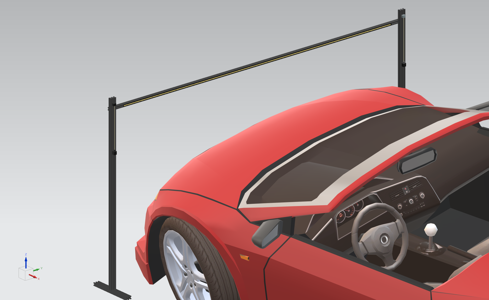
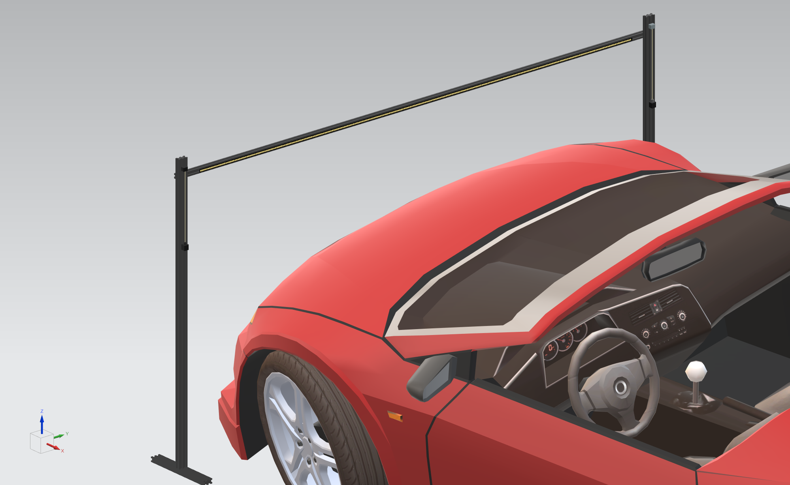

Project: Validation of Functionality in Matrix Headlights
 

Bachelor's thesis project, developed for Audi AG in Ingolstadt, Germany. Because of confidentiality issues, the project cannot be shown completed, only some parts of the model.
- Created a Python-based desktop application for configuring and simulating adaptive headlights based on EU and US regulations, utilizing real-time data from a Raspberry Pi and Arduino for sensor input.
- Integrated C++ and Python for controlling light intensity and traffic simulation in dynamic environments, providing users with custom configurations for light behavior and traffic conditions.
- Conducted vehicle light measurements using fluxometers and sensors, automating the data collection process for validation.
- Researched and implemented regulatory compliance requirements (EU and US) in the application to ensure legality and effectiveness of the lighting system.